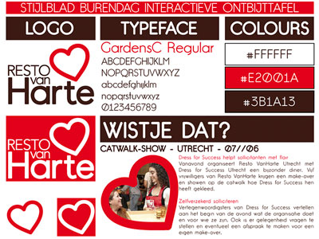

Geboren te Haarlem in Juni 1984, aandacht voor mooie dingen, lekker eten en games.
Van professioneel kok naar toekomstig web developer aan de opleiding Communication and multimedia design, Hogeschool van Amsterdam.
Ik ben Roel.
U kunt bij mij terecht voor een website of grafisch werk.
Ik ben een voorstander van een toegankelijk internet. Iedereen moet mijn ontworpen websites kunnen gebruiken. Op desktops, laptops en ook mobiel.
- Web Development
- OpenCart
- PHP 5+
- MySQL
Concept webwinkel voor Concerto Amsterdam. Concerto Rare, een plek op het internet om exclusieve vinyl platen te presenteren.
- Vormgeven
- Illustrator
- Print
Voor Celliste Caroline Deul heb ik haar logo verbeterd. Daarmee ook een nieuw visitekaartje ontworpen.

- User experience
- Vormgeving
- Illustrator
- Photoshop
CMD Project voor een goed doel. Het doel was het maken van een interactief medium waarmee een boodschap aan een specifieke doelgroep wordt overgebracht tijdens een evenement. Ik heb gekozen voor het goede doel Resto VanHarte en de nationale burendag, het burenontbijt aan een interactieve tafel.
- Vormgeving
- Photoshop
- Print
Poster ontwerp voor het eindexamenconcert master cello van Caroline Deul. Ik heb voor het ontwerpen de muziekstukken goed beluisterd en deze in de poster gevisualiseerd met frisse kleuren.
Bij dit spel is er een speler en een vijand. De vijand valt automatisch aan en als speler krijg je de keuze uit diverse commando's. Speel Droid Invaders
Project voor CMD Programmeren. Het beheersen van basis programmeren binnen javascript. Een bekend oud-Hollands spel in een nieuw jasje. Voor twee spelers bedoeld. Speel Boter, Kaas en Eieren
- User Experience
- Vormgeving
- Photoshop
Kort intensief user experience project voor CMD Amsterdam. Concept ontwerp van een bordspel met als inspiratie "Joris en de Draak" attractie van de Efteling.
- Web design
- Web development
Caroline is een Celliste afgestudeerd aan het Conservatorium van Utrecht. Zij wilde een website om haar cellodiensten aan te kunnen bieden. Bekijk carolinedeul.nl
Voor het bachelor eindexamenconert van Caroline heb ik een poster ontworpen om haar optreden te promoten. De stof van haar concertjurk heb ik gebruikt als achtergrond.
- Vormgeving
- Front-end
- Javascript
- HTML 4
- CSS 1 + 2
Voor de Theaterwinkel Antonisse en van Baalen een website ontworpen met contact en bestelformulieren en met Javascript een productcatalogus geschreven. Dit was mijn eerste ervaring met web design en sindsdien ben ik mij gaan verdiepen in deze multimedia wereld.
Dit zijn de vaardigheden en tools die ik mij eigen heb gemaakt:
- Web development
- HTML
- CSS
- Javascript
- jQuery
- PHP
- MySQL
- Wordpress
- Joomla
- Opencart
- Grafische vormgeving
- Photoshop (CS6)
- Illustrator (CS6)
- inDesign (CS6)
- Responsive design
- Logo design
- Variable Data Printing
- Interaction design
- Wireframes
- Prototyping
- User experience